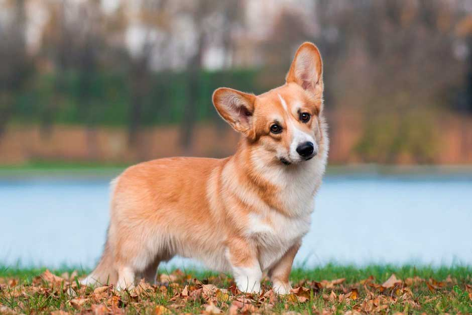
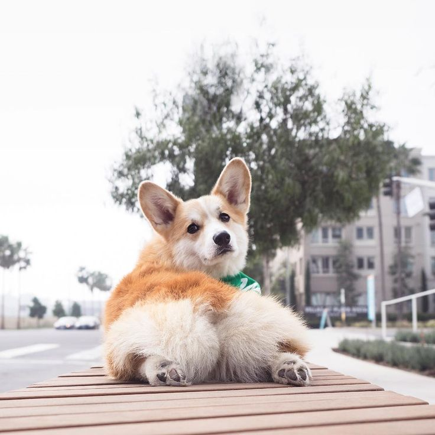
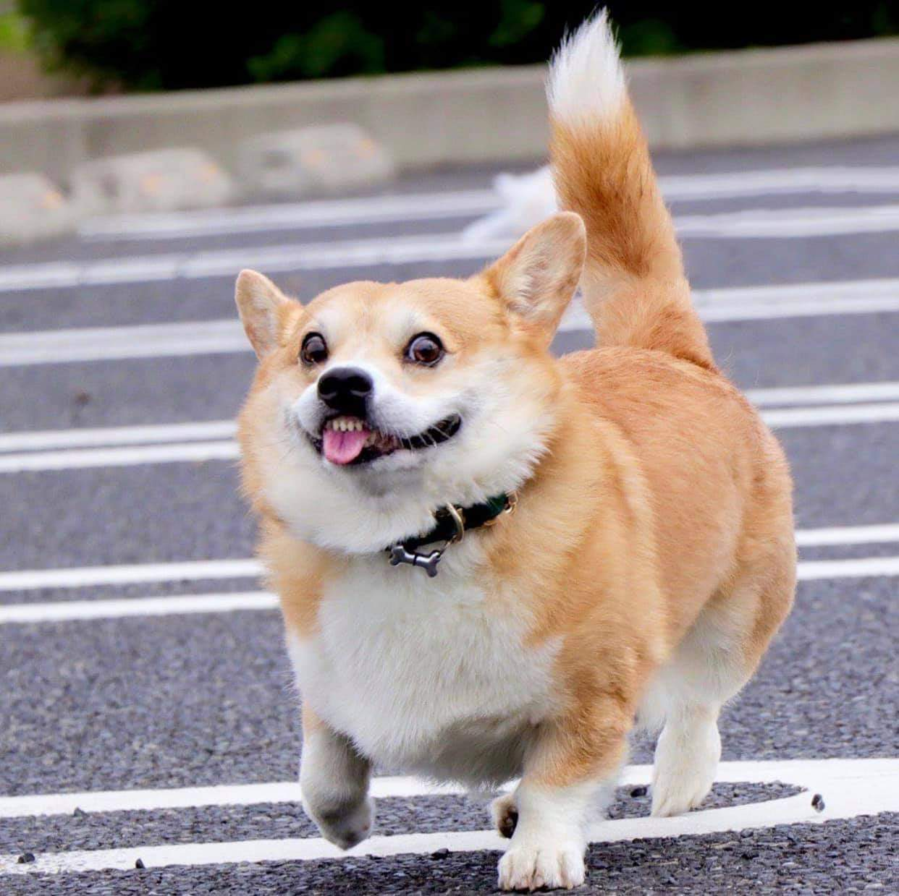
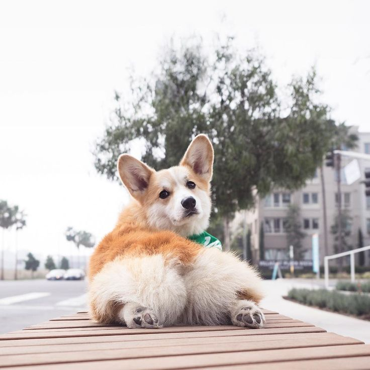
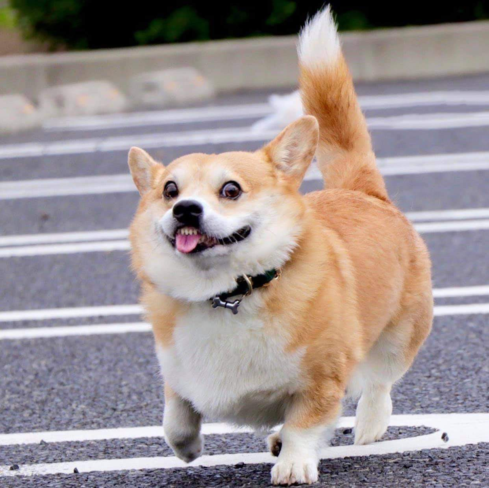

корги - очень милая собак с большим количеством шерсти. здесь будет инфармация про собак
 

Вельш-корги – это пастушьи породы собак двух разновидностей: пемброк и кардиган. Они отличаются друг от друга внешне и имеют разные стандарты. Оба вида относятся к 1 группе FCI. Кардиган. Кардиганы – это крепкие, выносливые собаки с плотным телосложением. Их корпус пропорционально растянут. Хвост в лисьем типе посажен на одной линии со спиной. Вельш-корги — это низкорослые пастушьи собаки. Несмотря на миниатюрность, собак относят к семейству овчарок. Тело у породы длинное, коренастое. Лапы короткие, но в движениях не стесняют, напротив, двигается порода свободно и энергично. Наибольшую популярность получила с того дня, когда при королевском дворе впервые появился один из щенков вельш-корги пемброк. С того времени в королевской семье жило 14 поколений корги. Но есть еще две собаки, которые с большей вероятностью оставили свой след – исландская собака и шведский вальхунд. Интересно то, что порода, несмотря на свои достоинства, оставалась в тени вплоть до 1892 года, когда впервые появилась на выставке. Но по-настоящему обратить на себя внимание породе удалось с подачи Йоркинского герцога, который преподнес щенка корги своим дочерям – Маргарет Роз и Элизабет, будущей английской королев Но, несмотря на миролюбие, к незнакомцам у собаки нет определенного мнения. Собаки могут, как проявить настороженность и даже облаять или умудриться полюбить с первого взгляда. Поэтому в службу охраны корги путь заказан. У вельш-корги есть склонность собирать в кучку все, что движется. Щенки нередко бегают за людьми, порываясь укусить за пятки. Так они стараются задать направление движения для отбившегося от стада сородича. Сказывается пастушье прошлое.